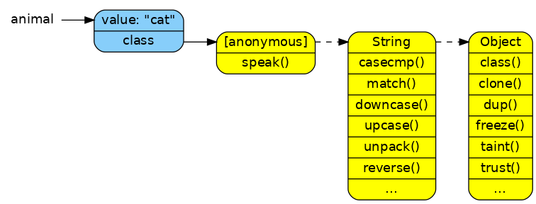

Learning Javascript with Object Graphs (Part III)
HEADS UP! This article was written for an older version of node. More up-to-date information may be available elsewhere.
Part I of this series explained basic object graphs and visually described references, closures, and basic inheritance in JavaScript. Part II compared different styles for doing object-oriented programming in JavaScript. Now in Part III we'll get creative and look as Ruby's object model and compare it to how JavaScript works. Also I'll show how to implement some Ruby style classes. JavaScript is a very flexible language and can support about any object model you want with enough understanding and creativity.
Why Ruby
Ok, I'll admit, I used to be a ruby guy. I didn't so much do rails, but I loved the ruby language. I read the pickaxe book, attended dallasrb, tried to start my own ruby based company, failed, and finally taught ruby to home-school kids.
Also I chose ruby because I've noticed that several newcomers to the node.js community come from ruby and other languages with similar object systems. They often have a hard time adjusting to the simple, but new semantics of a language that looks like C/Java/PHP, but acts more like Lisp/Closure/Self.
What are Objects
Both languages are object oriented languages. The difference is one subscribes to the stricter and slightly more complicated classical OO style while the other has a plain prototypal object system. In both languages all values are objects (or at least act like them). A ruby class is also an object who is an instance of the class Class. In JavaScript functions are also objects. In both primitive values like numbers and booleans are objects that contain methods/functions through their classes/prototypes. An object is simply a value that contains state and/or behavior through named channels. Objects provide encapsulation so that you can call obj.save() instead of having to use some external function and pass around all the state save(obj).
Methods versus Functions
Probably the biggest difference between the object models when you get down to it and ignore syntax is the fact that Ruby has methods and JavaScript has first-class functions. I can hear you thinking how "Wait, I thought 'method' and 'function' were synonyms!" so I'll explain what I mean.
Gotta keep them separated
In classical OO, there is this idea that you must separate function from state. The same object structure can't hold both data and executable code. So classes hold the methods and instance objects hold the data (instance variables). Ruby is no exception. The language simply doesn't allow for methods on anything other than a class. Sure you can add singleton methods to objects, but the methods aren't actually on the object itself they are on a separate singleton class created just for the purpose of holding the methods for that single object.
In JavaScript there is no concept of methods. Functions are first-class, meaning they are expressions just like true, 42, {}, and everything else you can assign to a variable or property of an object. You can emulate classes if you explicitly put all your function properties in a shared prototype object and then have your "instance" objects all inherit from that common prototype, but the fact is you're not forced to work this way. For better or for worse, JavaScript has very few rules about what you can and can't do.
Controlled Inheritance
Another side effect of this difference in inheritance. In Ruby and other classical OO languages, only methods can be inherited. Instance variables only exist on instances and instances can't inherit from instances, only classes inherit from classes. In JavaScript, any object can inherit from any object and all properties are subject to this prototypal inheritance no matter their type.
self and this
Both languages have seemingly similar special variables that give you access to the current "scope".
In Ruby self is the default receiver of all method calls that don't specify a receiver. In methods it's usually the instance object itself (or its singleton class actually). You can't get at instance variable directly via self, but use the @foo notation instead. Any method invocation without an explicit receiver will get looked up in self and its superclasses. Thus calling foo() is the exact same as calling self.foo().
In JavaScript, if you call foo() that's not the same thing at all as this.foo(). The first, foo() will look for a foo local variable via the closure and set its this to global. But calling this.foo() will look for a foo property in this and call it with the old this as the new this.
Object Graphs
Ok, enough theory, now for some sample code and diagrams! I'll show some ruby code, its diagram, and then the closest JavaScript implementation I could think of and its diagram.
Most of the ruby examples are based on the MetaProgramming chapter of Programming Ruby 1.9 by Pragmatic Programmers.
A String
All values are objects, let's start out with a simple string.
Ruby
animal = "cat"Notice that every object has a class. Our string is of class String which inherits from the class Object. its class String is of class Class which inherits Module and then Object.
For purposes of seeing how animal works we don't need to worry about the classes of classes. The diagram is much simpler by removing that part:
Now you can clearly see what methods are available to our animal object.
JavaScript
var animal = "cat";
Remember that you can simulate classes in JavaScript using constructor + prototype pairs. That's just what the built-in object types do. The prototypes are objects and thus inherit directly from Object.prototype and the constructors are functions and inherit from Function.prototype.
But let's see this diagram without the constructors, they don't affect the object once it's constructed and greatly complicate the image:
That's much better. The literal "cat" inherits from the String.prototype which in turn inherits from Object.prototype. You can see why you're able to call functions like animal.trim() and see where the function comes from.
Singletons
Remember that Ruby only allows methods on class objects. So what do you do if you really want to add a method to a single object? You'd have to create a special sub-class, add in the method you wanted, and then create your instance from that new class. Well, ruby has some nice syntax to make this easy and automatic:
animal = "cat"
def animal.speak
puts "The #{self} says miaow"
end
animal.speak
puts animal.upcase# Output
The cat says miaow
CAT
Let's see the graph of this object now that we added in a singleton method and class:

Notice that it injected a new anonymous class directly in front of the object and put the new method there for you. This class is hidden though. If you call the animal.class() then you'll get a reference to String directly.
In JavaScript there is no need to create a new object to hold the function since the language allows functions to be stored anywhere. You simply assign the function directly to the object. There is one gotcha though. Primitives are immutable in JavaScript meaning you can't just add some properties to a string. This will work for any mutable object though so we'll use a regular expression instead.
var animal = /cat/;
animal.speak = function speak() {
console.log("The " + this + " says miaow");
};
animal.speak();
animal.test('caterpiller');Notice that we just added the speak function in with the existing properties of the object. There is no need to separate them out into a different layer in JavaScript.
A Class
Lets start out with a simple user-defined class and slowly add in inheritance, class methods, and mixed-in modules.
First a simple user-defined class:
class Dave
endIn JavaScript this is simply a constructor function: (Which is really just another function)
function Dave() {}Notice that the prototype object was created for us and the linking back and forth was built-in. This is part of the ECMA spec. All functions, no matter if they are used as constructors or not, have a prototype.
Class Methods
Since a class is an object, it's possible to give it singleton methods in Ruby and have what's known as class methods.
# Make a parent class
class Person
# with an instance method
def greet
puts "Hello"
end
# and a class method.
def self.create
self.new
end
end
# Create a subclass
class Dave < Person
end
# and test it.
puts Dave.create
puts Dave.new
Dave.create.greet# Output
#<Dave:0x0000010086d3b8>
#<Dave:0x0000010086d340>
Hello

You see that it inserted a new anonymous class in the chain to store the create method.
In JavaScript you can do the same by simply adding a property on the constructor:
// Make a parent class
function Person() {}
// with an instance method
Person.prototype.greet = function greet() {
console.log("Hello");
}
// and a class method.
Person.create = function create() {
return new this();
};
// Create a subclass
function Dave() {}
Dave.__proto__ = Person;
Dave.prototype.__proto__ = Person.prototype;
// and test it.
console.log(Dave.create());
console.log(new Dave);
Dave.create().greet();Here we make the constructor inherit from its parent constructor (so that "class methods" get inherited) and inherit the prototypes so that "instance methods" get inherited. Again there is no need for hidden classes since javascript allows storing function properties on any object.
Moving Forward
Originally I wanted this article to explore how to implement Ruby modules and mixing in javascript, but life got in the way. I started an awesome job at Palm working on node for webOS and moving to a new house. Also I hit a technical wall where I can't fully implement ruby style module includes because it's not possible in JavaScript. (I can't make new methods added to an already included module appear in all the prototype chains that include that module)
So instead of holding onto this useful article for ages, I'm realeasing it as is. Hopefully when things settle down I can write the next part of the series.
View the discussion thread.blog comments powered byDisqus